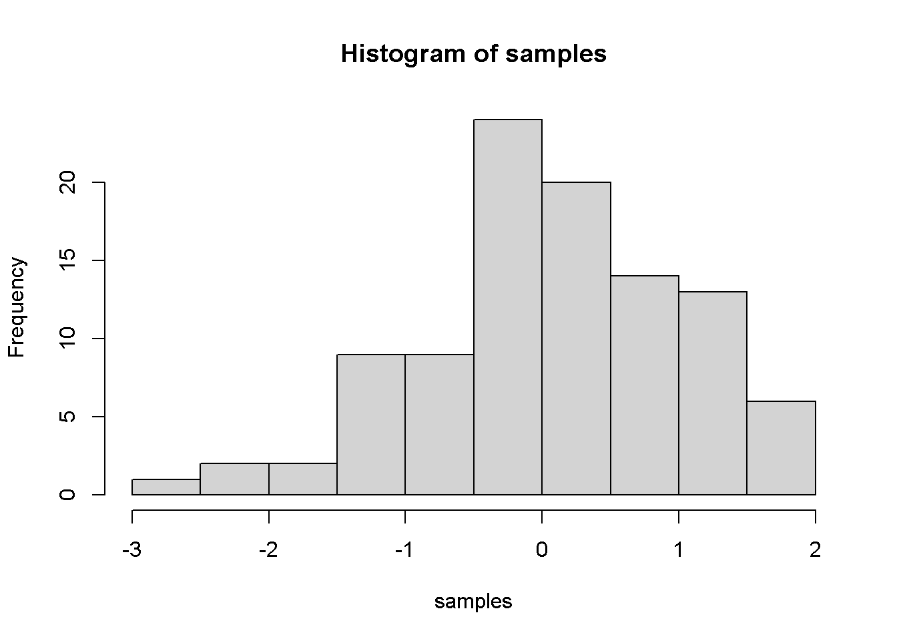

Assignment
Parnpailin Jeansathawong
2020-11-23
1 Challenge 1
Last compiled: 2020-11-27
1.1 Chalenge 1.1
# 1.0 Load libraries ----
library(tidyverse)
library(readxl)
library(lubridate)
library("writexl")
# 2.0 Importing Files ----
bikes_tbl <- read_excel(path = "data-science/DS_101/00_data/01_bike_sales/01_raw_data/bikes.xlsx")
orderlines_tbl <- read_excel("data-science/DS_101/00_data/01_bike_sales/01_raw_data/orderlines.xlsx")
bikeshops_tbl <- read_excel("data-science/DS_101/00_data/01_bike_sales/01_raw_data/bikeshops.xlsx")
bike_orderlines_joined_tbl <- orderlines_tbl %>%
left_join(bikes_tbl, by = c("product.id" = "bike.id")) %>%
left_join(bikeshops_tbl, by = c("customer.id" = "bikeshop.id"))
bike_orderlines_wrangled_tbl <- bike_orderlines_joined_tbl %>%
separate(col = category,
into = c("category.1", "category.2", "category.3"),
sep = " - ") %>%
mutate(total.price = price * quantity) %>%
select(-...1, -gender) %>%
select(-ends_with(".id")) %>%
bind_cols(bike_orderlines_joined_tbl %>% select(order.id)) %>%
select(order.id, contains("order"), contains("model"), contains("category"),
price, quantity, total.price,
everything()) %>%
rename(bikeshop = name) %>%
set_names(names(.) %>% str_replace_all("\\.", "_"))
#Challenge
bike_orderlines_wrangled_city_state_tbl <- bike_orderlines_wrangled_tbl %>%
separate(col = location,
into = c("city", "state"),
sep = ",")
sales_by_city_state_tbl <- bike_orderlines_wrangled_city_state_tbl %>%
select(order_date, state, city, total_price) %>%
mutate(year = year(order_date)) %>%
group_by(state, city) %>%
summarise(sales = sum(total_price)) %>%
ungroup() %>%
# Format $ Text
mutate(sales_text = scales::dollar(sales, big.mark = ".",
decimal.mark = ",",
prefix = "",
suffix = " €"))
sales_by_city_state_tbl %>%
ggplot(aes(x = state, y = sales)) +
geom_col(fill = "#2DC6D6") + # Use geom_col for a bar plot
theme(axis.text.x = element_text(angle = 90, hjust = 1))+
scale_y_continuous(labels = scales::dollar_format(big.mark = ".",
decimal.mark = ",",
prefix = "",
suffix = " €")) +
labs(
title = "Revenue by state",
subtitle = "",
x = "State", # Override defaults for x and y
y = "Revenue"
)
1.2 Chalenge 1.2
# 1.0 Load libraries ----
library(tidyverse)
library(readxl)
library(lubridate)
library("writexl")
# 2.0 Importing Files ----
bikes_tbl <- read_excel(path = "data-science/DS_101/00_data/01_bike_sales/01_raw_data/bikes.xlsx")
orderlines_tbl <- read_excel("data-science/DS_101/00_data/01_bike_sales/01_raw_data/orderlines.xlsx")
bikeshops_tbl <- read_excel("data-science/DS_101/00_data/01_bike_sales/01_raw_data/bikeshops.xlsx")
bike_orderlines_joined_tbl <- orderlines_tbl %>%
left_join(bikes_tbl, by = c("product.id" = "bike.id")) %>%
left_join(bikeshops_tbl, by = c("customer.id" = "bikeshop.id"))
bike_orderlines_wrangled_tbl <- bike_orderlines_joined_tbl %>%
separate(col = category,
into = c("category.1", "category.2", "category.3"),
sep = " - ") %>%
mutate(total.price = price * quantity) %>%
select(-...1, -gender) %>%
select(-ends_with(".id")) %>%
bind_cols(bike_orderlines_joined_tbl %>% select(order.id)) %>%
select(order.id, contains("order"), contains("model"), contains("category"),
price, quantity, total.price,
everything()) %>%
rename(bikeshop = name) %>%
set_names(names(.) %>% str_replace_all("\\.", "_"))
#Challenge 1.2
sales_by_location_year_tbl <- bike_orderlines_wrangled_city_state_tbl %>%
select(order_date, state, city, total_price) %>%
mutate(year = year(order_date)) %>%
group_by(state, year) %>%
summarise(sales = sum(total_price)) %>%
ungroup() %>%
# Format $ Text
mutate(sales_text = scales::dollar(sales, big.mark = ".",
decimal.mark = ",",
prefix = "",
suffix = " €"))
# Step 2 - Visualize
sales_by_location_year_tbl %>%
ggplot(aes(x = year, y = sales, fill = state)) +
geom_col() + # Run up to here to get a stacked bar plot
facet_wrap(~ state) +
scale_y_continuous(labels = scales::dollar_format(big.mark = ".",
decimal.mark = ",",
prefix = "",
suffix = " €")) +
theme(axis.text.x = element_text(angle = 45, hjust = 1))+
labs(
title = "Revenue by year and state",
subtitle = "",
fill = "State" # Changes the legend name
)
2 Challenge 2
2.1 Chalenge 2.1
R Flights - Get 10 cheapest flights from Germany to Bangkok from 1 Feb 2021 to 15 Feb 2021 - Get 10 cheapest fligths from Germany to anywhere today for 2 weeks
library("rflights")
# get Germany and Bangkok IDs
arg_id <- find_location("Germany", "country")
length(arg_id) # only one result, so it might be the one## [1] 1arg_id <- arg_id[[1]]
# names(arg_id)
arg_id$id## [1] "DE"# arg_id$continent
# arg_id <- arg_id$id
tl_id <- find_location("bangkok")
length(tl_id)## [1] 9# lapply(tl_id, function(x) x$type)
# we are looking for the city
tl_id <- tl_id[[which(sapply(tl_id, function(x) x$type == "city"))]]
tl_id$country## $id
## [1] "TH"
##
## $name
## [1] "Thailand"
##
## $slug
## [1] "thailand"
##
## $code
## [1] "TH"tl_id <- tl_id$id
tl_id## [1] "bangkok_th"# get flights from Germany to Bangkok
flights <- get_flights(
fly_from = "DE", fly_to = "bangkok_th",
date_from = "01/02/2021", date_to = "15/02/2021"
)
length(flights)## [1] 240# names(flights[[1]])
head(t(sapply(flights, function(x) c(x$price, x$cityTo))), n = 10)## [,1] [,2]
## [1,] "302" "Bangkok"
## [2,] "306" "Bangkok"
## [3,] "309" "Bangkok"
## [4,] "316" "Bangkok"
## [5,] "316" "Bangkok"
## [6,] "316" "Bangkok"
## [7,] "317" "Bangkok"
## [8,] "317" "Bangkok"
## [9,] "317" "Bangkok"
## [10,] "317" "Bangkok"# Let's go anywhere!
flights <- get_flights(
fly_from = "DE",
date_from = Sys.Date(), date_to = Sys.Date() + 2 * 7
)
length(flights)## [1] 239head(t(sapply(flights, function(x) c(x$price, x$cityTo))), n = 10)## [,1] [,2]
## [1,] "28" "London"
## [2,] "35" "London"
## [3,] "36" "Athens"
## [4,] "36" "Athens"
## [5,] "36" "Athens"
## [6,] "36" "Athens"
## [7,] "36" "Athens"
## [8,] "35" "Lisbon"
## [9,] "36" "Athens"
## [10,] "37" "London"2.2 Chalenge 2.2
Model and Price of MTB bikes
library(tidyverse) # Main Package - Loads dplyr, purrr, etc.
library(rvest) # HTML Hacking & Web Scraping
library(xopen) # Quickly opening URLs
library(jsonlite) # converts JSON files to R objects
library(glue) # concatenate strings
library(stringi) # character string/text processing
library(tidyverse) # Main Package - Loads dplyr, purrr, etc.
library(rvest) # HTML Hacking & Web Scraping
library(xopen) # Quickly opening URLs
library(jsonlite) # converts JSON files to R objects
library(glue) # concatenate strings
library(stringi) # character string/text processing
# url_mtb <- "https://www.rosebikes.de/fahrr%C3%A4der/mtb"
#
# xopen(url_mtb)
html_mtb <- read_html("https://www.rosebikes.de/fahrr%C3%A4der/mtb")
bike_tbl <- html_mtb %>%
html_nodes(css = ".catalog-category-bikes__title-text") %>%
html_text() %>%
stringr::str_replace_all(pattern = "\n", replacement = "") %>%
enframe(name = "position", value = "bike")
price_tbl <- html_mtb %>%
html_nodes(css = ".catalog-category-bikes__price-title") %>%
html_text() %>%
stringr::str_replace_all(pattern = "\nab ", replacement = "") %>%
stringr::str_replace_all(pattern = "\n", replacement = "") %>%
stringr::str_replace_all(pattern = "\200", replacement = "") %>%
stringr::str_replace_all(pattern = ",00", replacement = "") %>%
str_remove_all(pattern = "\\.") %>%
readr::parse_number() %>%
enframe(name = "position", value = "price")
left_join(bike_tbl,price_tbl)## # A tibble: 9 x 3
## position bike price
## <int> <chr> <dbl>
## 1 1 GROUND CONTROL 1699
## 2 2 ROOT MILLER 1999
## 3 3 PIKES PEAK 3099
## 4 4 THE BRUCE NA
## 5 5 COUNT SOLO NA
## 6 6 PSYCHO PATH 1849
## 7 7 THRILL HILL 2599
## 8 8 THRILL HILL TRAIL 2899
## 9 9 SOUL FIRE 21493 Challenge 3
3.1 Challenge 3.1
library(tidyverse)
library(vroom)
library(tidyverse)
library(readxl)
library(lubridate)
library("writexl")
col_types <- list(
id = col_character(),
type = col_double(),
name_first = col_character(),
name_last = col_character(),
organization = col_character()
)
assignee_tbl <- vroom(
file = "data-science/DS_101/00_data/assignee.tsv",
delim = "\t",
col_names = names(col_types),
col_types = col_types,
na = c("", "NA", "NULL")
)
col_types <- list(
patent_id = col_character(),
assignee_id = col_character(),
location_id = col_character()
)
patent_assignee_tbl <- vroom(
file = "data-science/DS_101/00_data/patent_assignee.tsv",
delim = "\t",
col_names = names(col_types),
col_types = col_types,
na = c("", "NA", "NULL")
)
assignee_select_tbl <- assignee_tbl %>%
select(id, type, organization) %>%
rename(
assignee_id = id
)
patent_select_tbl <- patent_assignee_tbl %>%
select(patent_id,assignee_id)
patent_assignee_joined_tbl <- assignee_select_tbl %>%
left_join(y = patent_select_tbl, by = c("assignee_id" = "assignee_id")) %>%
select(type,organization,patent_id) %>%
filter(type == 2) %>%
group_by(organization) %>%
summarise(
count = n()
) %>%
ungroup() %>%
arrange(desc(count)) %>%
slice(1:10)
patent_assignee_joined_tbllibrary(readr)
library(data.table)
result1 <- read_rds("assignment3-1.rds")
result1## # A tibble: 10 x 2
## organization count
## <chr> <int>
## 1 International Business Machines Corporation 139092
## 2 General Electric Company 47122
## 3 Intel Corporation 42157
## 4 Hewlett-Packard Development Company, L.P. 35573
## 5 Microsoft Corporation 30086
## 6 Micron Technology, Inc. 28001
## 7 QUALCOMM Incorporated 24703
## 8 Texas Instruments Incorporated 24182
## 9 Xerox Corporation 23174
## 10 Apple Inc. 218213.2 Challenge 3.2
library(tidyverse)
library(vroom)
library(tidyverse)
library(readxl)
library(lubridate)
library("writexl")
col_types <- list(
id = col_character(),
type = col_double(),
name_first = col_character(),
name_last = col_character(),
organization = col_character()
)
assignee_tbl2 <- vroom(
file = "data-science/DS_101/00_data/assignee.tsv",
delim = "\t",
col_names = names(col_types),
col_types = col_types,
na = c("", "NA", "NULL")
)
col_types <- list(
patent_id = col_character(),
assignee_id = col_character(),
location_id = col_character()
)
patent_assignee_tbl2 <- vroom(
file = "data-science/DS_101/00_data/patent_assignee.tsv",
delim = "\t",
col_names = names(col_types),
col_types = col_types,
na = c("", "NA", "NULL")
)
col_types <- list(
id = col_character(),
type = col_character(),
number = col_character(),
country = col_character(),
date = col_date("%Y-%m-%d"),
abstract = col_character(),
title = col_character(),
kind = col_character(),
num_claims = col_double(),
filename = col_character(),
withdrawn = col_double()
)
patent_tbl2 <- vroom(
file = "data-science/DS_101/00_data/patent.tsv",
delim = "\t",
col_names = names(col_types),
col_types = col_types,
na = c("", "NA", "NULL")
)
assignee_select_tbl2 <- assignee_tbl2 %>%
select(id, type, organization) %>%
rename(
assignee_id = id
)
patent_assignee_select_tbl2 <- patent_assignee_tbl2 %>%
select(patent_id,assignee_id)
patent_select_tbl2 <- patent_tbl2 %>%
select(number, date) %>%
rename(
patent_id = number
)
patent_assignee_joined_tbl2 <- assignee_select_tbl2 %>%
left_join(y = patent_assignee_select_tbl2, by = c("assignee_id" = "assignee_id")) %>%
left_join(y = patent_select_tbl2, by = c("patent_id" = "patent_id")) %>%
select(type,date,organization,patent_id) %>%
filter(type == 2) %>%
separate(col = date,
into = c("year", "month", "date"),
sep = "-", remove = FALSE) %>%
mutate(
year = as.numeric(year)
) %>%
filter(year == 2019) %>%
group_by(organization) %>%
summarise(
count = n()
) %>%
ungroup() %>%
arrange(desc(count)) %>%
slice(1:10)
patent_assignee_joined_tbl2
library(readr)
library(data.table)
result2 <- read_rds("assignment3-2.rds")
result23.3 Challenge 3.3
library(tidyverse)
library(vroom)
library(tidyverse)
library(readxl)
library(lubridate)
library("writexl")
col_types <- list(
id = col_character(),
type = col_double(),
name_first = col_character(),
name_last = col_character(),
organization = col_character()
)
assignee_tbl3 <- vroom(
file = "data-science/DS_101/00_data/assignee.tsv",
delim = "\t",
col_names = names(col_types),
col_types = col_types,
na = c("", "NA", "NULL")
)
col_types <- list(
patent_id = col_character(),
assignee_id = col_character(),
location_id = col_character()
)
patent_assignee_tbl3 <- vroom(
file = "data-science/DS_101/00_data/patent_assignee.tsv",
delim = "\t",
col_names = names(col_types),
col_types = col_types,
na = c("", "NA", "NULL")
)
col_types <- list(
uuid = col_character(),
patent_id = col_character(),
mainclass_id = col_character(),
subclass_id = col_character(),
sequence = col_double()
)
uspc_tbl3 <- vroom(
file = "data-science/DS_101/00_data/uspc.tsv",
delim = "\t",
col_names = names(col_types),
col_types = col_types,
na = c("", "NA", "NULL")
)
assignee_select_tbl3 <- assignee_tbl3 %>%
select(id, type, organization) %>%
rename(
assignee_id = id
)
patent_assignee_select_tbl3 <- patent_assignee_tbl3 %>%
select(patent_id,assignee_id)
uspc_select_tbl3 <- uspc_tbl3 %>%
select(patent_id, mainclass_id)
patent_assignee_joined_tbl3 <- assignee_select_tbl3 %>%
left_join(y = patent_assignee_select_tbl3, by = c("assignee_id" = "assignee_id")) %>%
select(type,organization,patent_id) %>%
group_by(organization) %>%
summarise(
count = n()
) %>%
ungroup() %>%
arrange(desc(count)) %>%
slice(1:10)
patent_assignee_joined_tbl3
# get the list of top10 result and put to filter below
top_mainclass_tbl3 <- assignee_select_tbl3 %>%
left_join(y = patent_assignee_select_tbl3, by = c("assignee_id" = "assignee_id")) %>%
left_join(y = uspc_select_tbl3, by = c("patent_id" = "patent_id")) %>%
select(organization,mainclass_id) %>%
filter(organization %in% c("International Business Machines Corporation", "Canon Kabushiki Kaisha","Samsung Electronics Co., Ltd.","General Electric Company","Kabushiki Kaisha Toshiba","Sony Corporation","Hitachi, Ltd.","Intel Corporation","Fujitsu Limited","NEC Corporation")) %>%
group_by(mainclass_id) %>%
summarise(
count = n()
) %>%
arrange(desc(count)) %>%
ungroup() %>%
slice(1:6) #row 1 is NA
top_mainclass_tbl3
library(readr)
library(data.table)
result3 <- read_rds("assignment3-3.rds")
result3